A fully functional Python project that creates a TRI database model and implements a data extraction pipeline to insert clean data for comprehensive environmental analysis.
Goal: Answer critical questions about toxic waste release patterns, responsible parties, and environmental impacts across the United States using EPA Toxic Release Inventory data.
Question: What facilities were involved in dumping the most pounds of waste throughout the years (Ranks 1–5)?
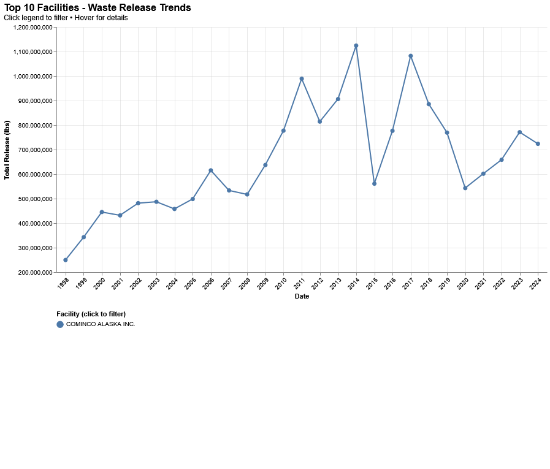
Trend Analysis: From 1998–2014 we see an upward trend of total releases, followed by volatile up-and-down spikes from 2014–2024.
Red Dog Mine is the world's largest producer of Zinc and Lead. They are the largest U.S. toxic polluter — a finding confirmed by our database, where Cominco Alaska Inc. ranks #1 by total toxic waste released per facility. They are also the reason why Alaska (37.1 million lbs) and the Arctic (481.6 million lbs) are the top two locations for toxic release per pound.
According to the EPA, Alaska ranked first in the nation for the largest total releases of chemicals in 2002, with 545.5 million pounds of toxics coming from the mining industry. The hard rock mining industry is the nation's largest toxic polluter, releasing 1.3 billion lbs (27% of toxics released by U.S. industry). According to Pam Miller, the hardrock industry releases toxins such as lead, copper, zinc, and other heavy metals that pollute land, water, and air.
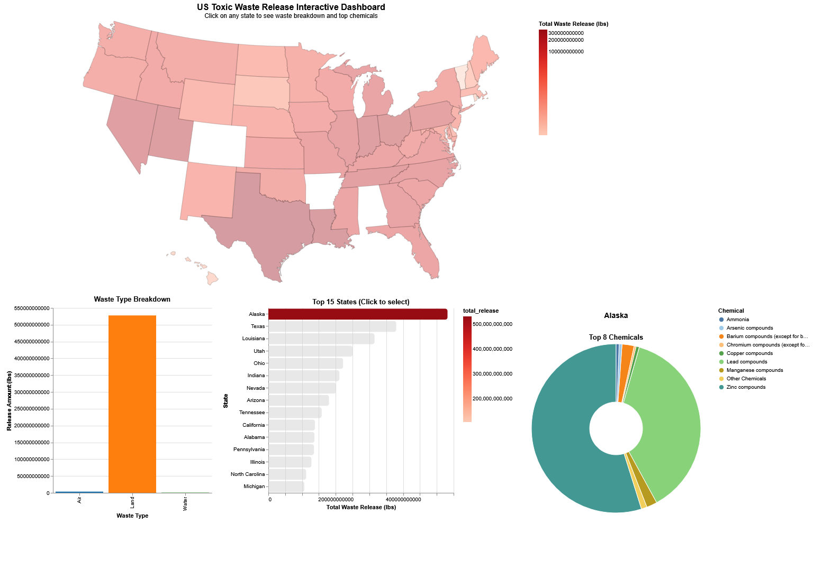
Source: Alaska Community Action on Toxics — Red Dog and Subsistence Analysis
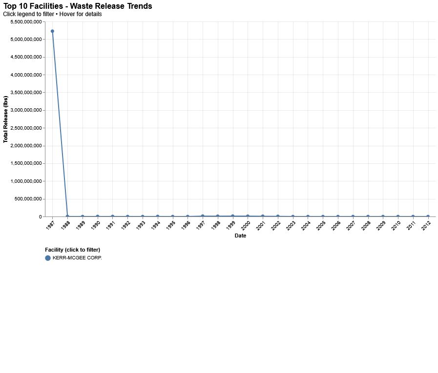
Analysis of the total waste chart reveals a massive gap between Kerr-McGee Corp and other facilities around 1987 — approximately 5.2 billion pounds of waste difference.
Documented Environmental Incidents:
Navassa, North Carolina (1979–1980): According to the DARRP (Damage Assessment, Remediation, and Restoration Program), Kerr-McGee dismantled a creosote wood-treating facility on a 250-acre parcel adjacent to the Cape Fear River, Brunswick River, and Sturgeon Creek. This released creosote and sludge, leading to SVOC (Semi-Volatile Organic Compound) contamination — specifically PAH (Polycyclic Aromatic Hydrocarbon) — in soils, groundwater, and surrounding marsh sediments. According to EPA data, PAH is a cancer-causing PBT chemical.
Cimarron City, Oklahoma (1965–1975): According to the NRC (Nuclear Regulatory Commission), Kerr-McGee fabricated enriched uranium and mixed oxide fuels for nuclear reactors. The site contained several buildings, collection ponds, sanitary lagoons, storage areas, and burial areas.
Navajo Nation, Arizona (1940s–1980s): According to the EPA, Kerr-McGee mined over 7 million tons of uranium in northeastern Arizona, Chapter Cove, consisting of 50 Abandoned Uranium Mines (AUMs). This affected air, water, future land use, health, and workforce development of communities near Lukachukai and Carrizo Mountains. Through 2000–2020, remediation efforts have been undertaken by the EPA, AML (Abandoned Mine Lands) programs, and ASPECT (Airborne Spectral Photometric Environmental Collection Technology).
Kerr-McGee's activities stopped in 2001 due to legal pushback, culminating in acquisition by Anadarko Petroleum in 2006.
Sources: - NOAA DARRP — Kerr-McGee Chemical Corp - NRC — Kerr-McGee Cimarron Facility - EPA — Navajo Nation Uranium Cleanup - SEC — Anadarko Acquisition Filing
Rank 3: Rio Tinto — 1997–2024
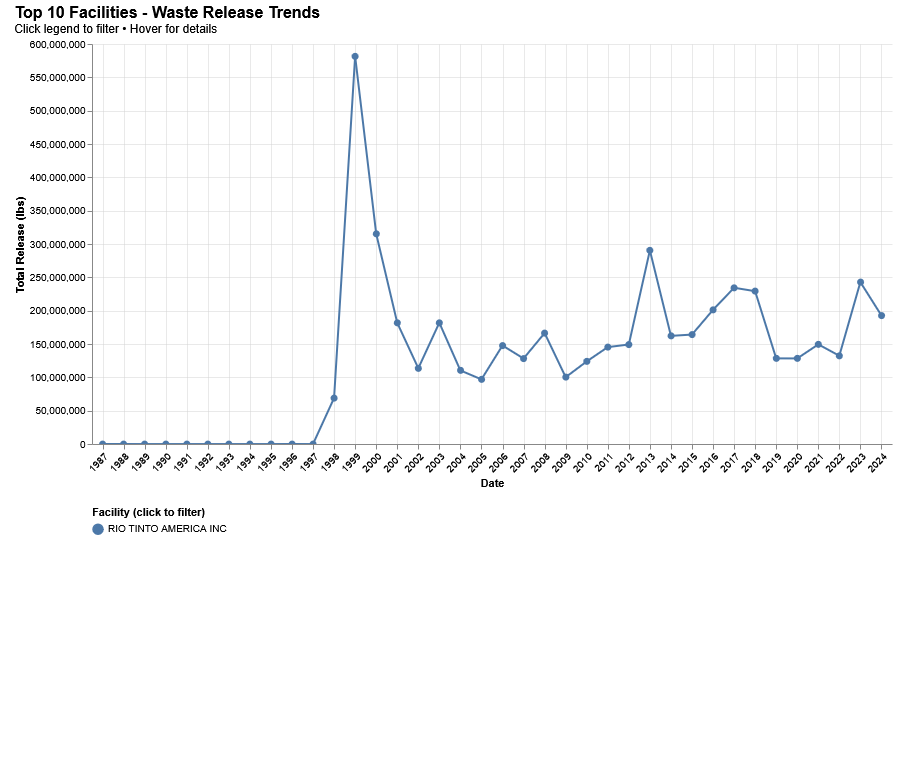
A huge spike in waste occurred in 1999, followed by a gradual decline until 2002, then moderate upward and downward spikes through 2024.
Global Environmental Footprint
Panguna Mine — Bougainville, Papua New Guinea - Billions of tons of toxic waste in rivers - Polluted major bays and Pacific Ocean - Caused illness (asthma, TB, respiratory infections) - War caused approximately 10,000 deaths between 1990–1997
Grasberg Mine — West Papua, Indonesia - Joint venture with Freeport McMoRan - 3.5 billion metric tons of waste dumped into local streams
Kelian Gold Mine — Indonesia - 100 million metric tons of contaminated waste rock - Approximately 1,100 kg cyanide released in rivers (1996)
Flambeau Mine — Ladysmith, Wisconsin, USA - Produced 181,000 tons of copper (1993–1997) - 2009 lawsuit exposed groundwater pollution - Copper contamination found in crayfish
QMM Mine — Fort-Dauphin, Madagascar - Construction began 2006 - Contains 75+ million tons of ilmenite (titanium oxide) deposits
Rössing Uranium Mine — Namibia - Rio Tinto owns approximately 69% - Produces 20 million tons of sulphuric-acid-soaked radioactive rock annually
Sources: - London Mining Network — Rio Tinto Report - Human Rights Law Centre — Panguna Mine Impacts
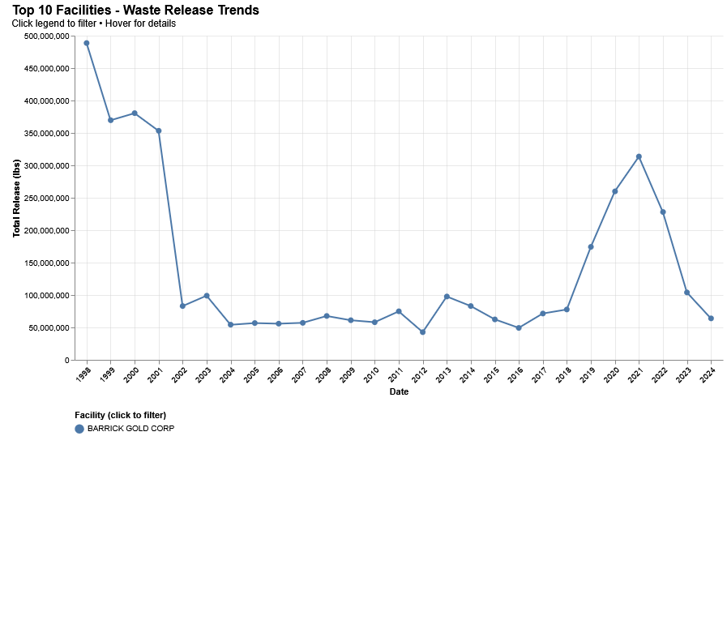
Key Findings:
Mercury Emissions: According to Miller and Jones, Nevada gold mines released 3,700 lbs of mercury air emissions in 1998; Barrick released 13,629 tons of mercury by-product in 1999.
Sources: - EPA Regulations Document - CorpWatch — Barrick's Dirty Secrets - EPA — ASARCO Bankruptcy Settlement
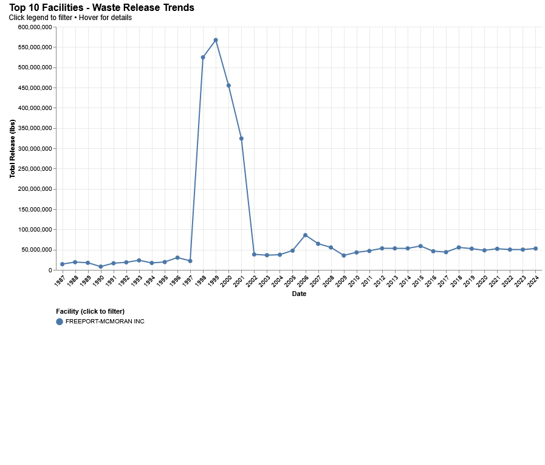
A massive spike occurred between 1997–2000. According to Earthworks, Freeport sends more than 76 million metric tons of tailings and waste rock into Indonesian rivers every year (company-reported figure: 50 million tons in 2017).
Major Incidents: - Billions of gallons of sludge escaped, traveling hundreds of kilometers down the Doce River, killing at least 19 people and leaving hundreds homeless. - Daily toxic waste dumping has escalated from ~10,000 tons to 300,000 tons per day, channeled through the Ajkwa River near Timika.
Sources: - OHCHR — Solidarity for Indigenous Papuans - Mining.com — Giant Mine Spewing Waste
Question: What state has the most pounds of waste throughout the years (Ranks 1–5)?
Rank 1: Alaska — ~532 Billion Pounds
Top Chemicals: - Zinc: 291 Billion lbs - Lead: 200 Billion lbs
Disposal Method: 527 billion pounds land-based. Cominco Alaska Inc (Red Dog Mine) is the primary contributor.
Rank 2: Texas — ~387 Billion Pounds
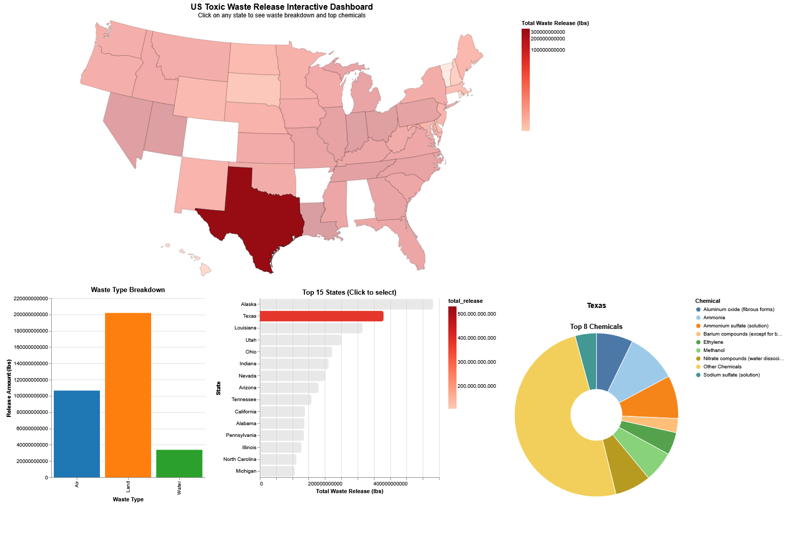
Top Chemicals: - Ammonia: 69 Billion lbs - Nitrate: 27 Billion lbs - Aluminum: 27 Billion lbs
Disposal Method: 201 billion lbs land, 100 billion lbs air. Texas has a lax regulatory environment where polluting facilities can easily dump waste with permits.
Rank 3: Louisiana — ~315 Billion Pounds
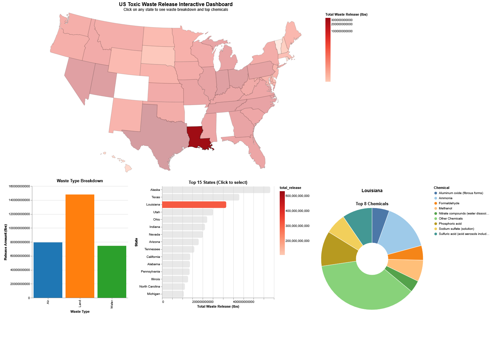
Top Chemicals: - Ammonia: 48 Billion lbs - Phosphoric Acid: 35 Billion lbs - Sulphuric Acid: 30 Billion lbs
Disposal Method: 147 billion lbs land, 79 billion lbs air, 74 billion lbs water.
Louisiana contains 25% of U.S. petrochemical products, harming air, water, and soils. The region known as "Cancer Alley" has extreme air pollution causing cancer, reproductive, maternal, newborn, and respiratory health harm.
Source: Johns Hopkins Public Health — Louisiana's Cancer Alley
Rank 4: Utah — ~250 Billion Pounds
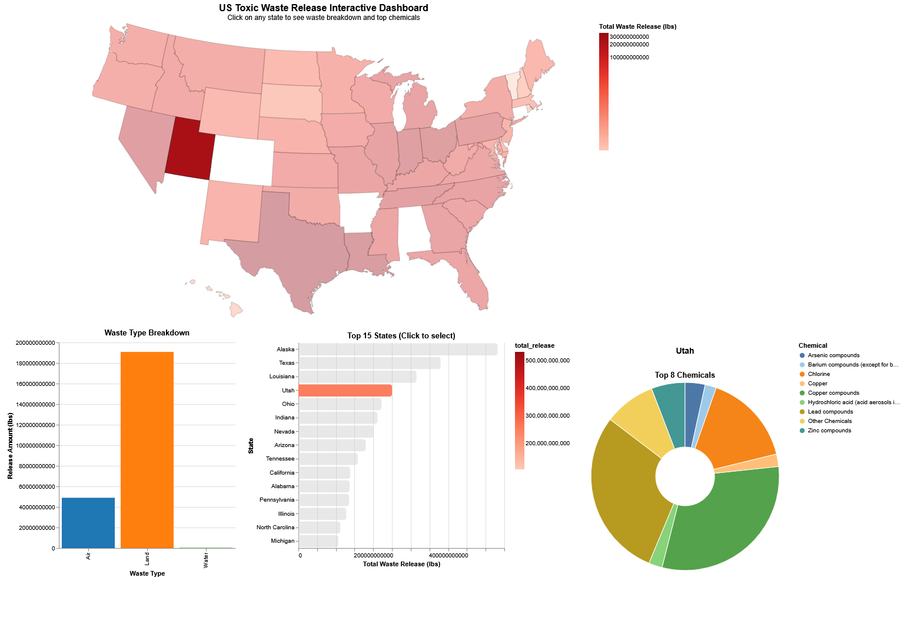
Top Chemicals: - Copper: 76 Billion lbs - Lead: 72 Billion lbs - Chlorine: 39 Billion lbs
Disposal Method: 190 billion lbs land, 48 billion lbs air.
"Sediments produced by the dry playa around Great Salt Lake have been contaminated by a century of mining, waste disposal, oil refining and other human activities." — Utah State University research team
Source: Utah State University — Great Salt Lake Dust Research
Rank 5: Ohio — ~222 Billion Pounds
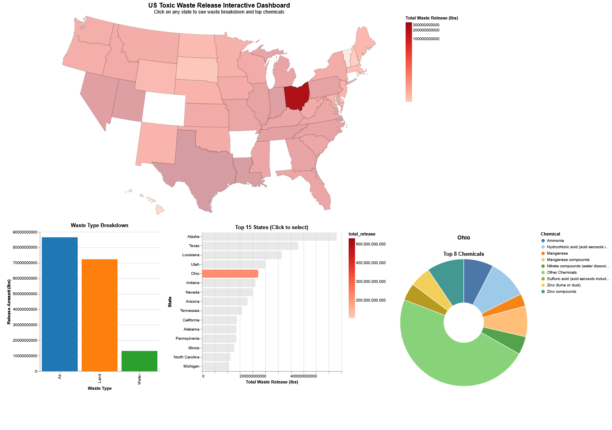
Top Chemicals: - Hydrochloric Acid: 22 Billion lbs - Zinc: 20 Billion lbs - Ammonia: 19 Billion lbs
Disposal Method: 86 billion lbs air, 72 billion lbs land.
"EPA estimates 20,000 gallons of hazardous waste is stored in various containers on the site, including chromium, lead, arsenic, various acids, and cyanide salts. Not all containers are labeled, and some containers are missing tops or lids." — EPA on Woodhill Plating Works, Cleveland
Question: What county has the most pounds of waste throughout the years (Ranks 1–5)?
Rank 1: Northwest Arctic, AK — ~478 Billion Pounds
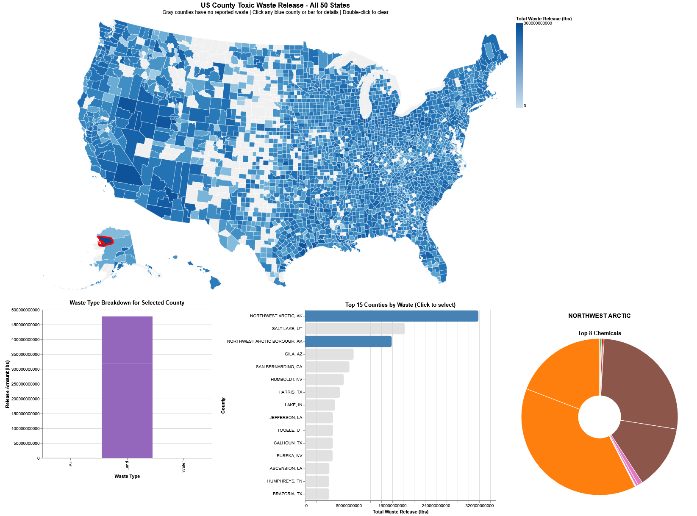
Top Chemicals: - Zinc: 274 Billion lbs - Lead: 190 Billion lbs
Disposal Method: 476 billion lbs land-based. Red Dog Operations is the primary contributor.
Rank 2: Salt Lake, UT — ~183 Billion Pounds
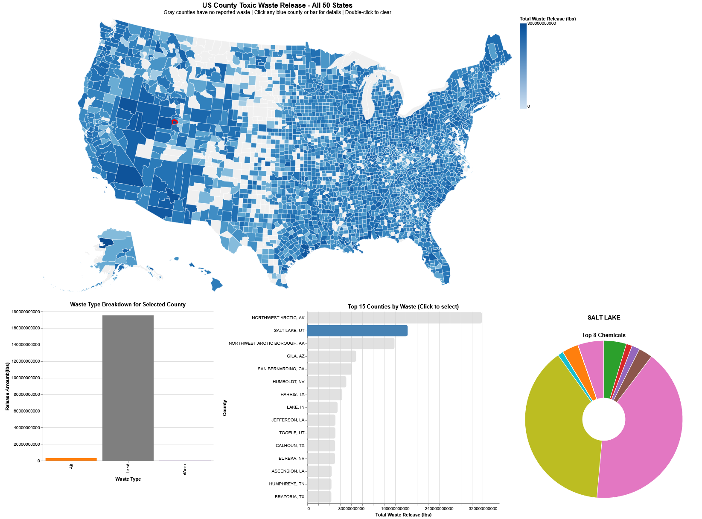
Top Chemicals: - Copper: 75 Billion lbs - Lead: 70 Billion lbs
Disposal Method: 175 billion lbs land-based. Primary sources: Rio Tinto America and Kennecott Holdings Corp (Rio Tinto subsidiary).
"The Kennecott South Zone includes the Bingham Mining District in the Oquirrh Mountains... Mining activities began in the 1860s and continue today. Soils, sludge, surface water and groundwater are contaminated." — EPA
Source: EPA Superfund Site Profile
Rank 3: Gila, AZ — ~89 Billion Pounds
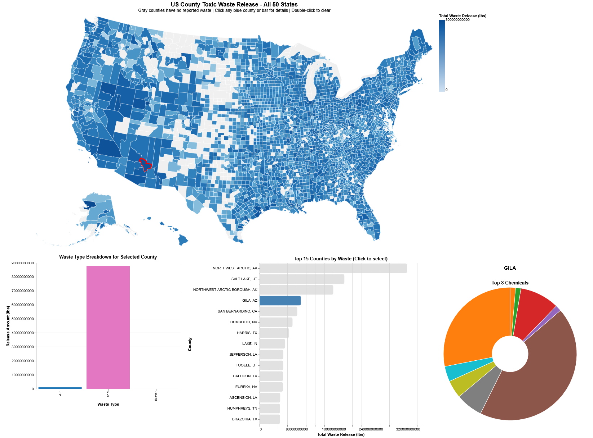
Top Chemicals: - Zinc: 38 Billion lbs - Additional Zinc compounds: 25 Billion lbs
Disposal Method: 87 billion lbs land-based. Primary sources: Freeport-McMoRan Inc and Americas Mining Corp.
Rank 4: San Bernardino, CA — ~81 Billion Pounds
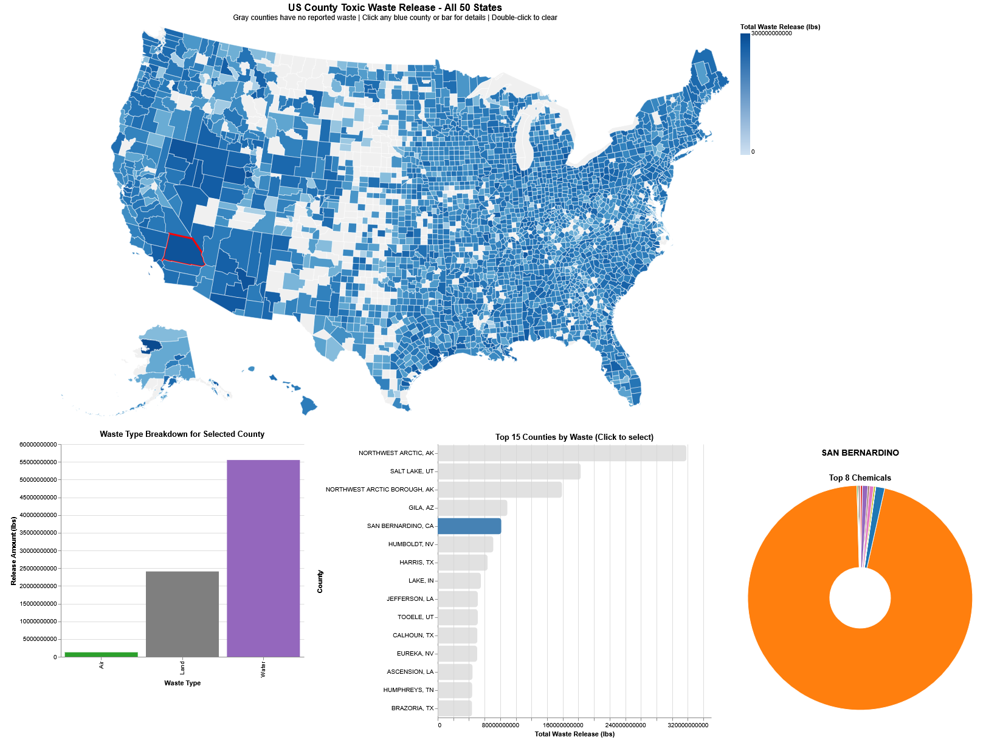
Top Chemicals: - Sodium Sulphate: 78 Billion lbs
Disposal Method: 55 billion lbs water-based.
Rank 5: Humboldt, NV — ~71 Billion Pounds
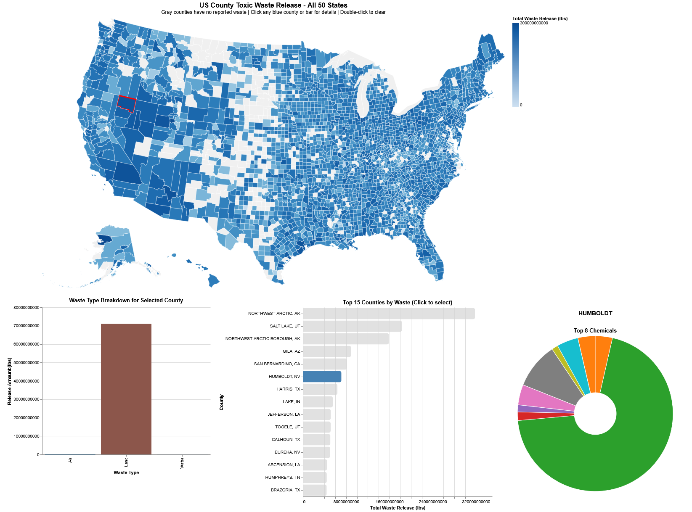
Top Chemicals: - Arsenic: 48 Billion lbs
Disposal Method: 71 billion lbs land-based.
Key Insight: Mining operations dominate the top counties, with Northwest Arctic, AK leading by a significant margin. Land-based disposal is the overwhelming preference across all top counties except San Bernardino, CA which relies primarily on water-based disposal.
Rank 1: Metal Ore Mining Copper, Zinc, Lead, and Nickel — All top 5 facilities belong to this sector
Rank 2: Chemical Manufacturing All Other Basic Organic Chemical Manufacturing (NAICS 325199) Includes American Cyanamid Superfund site: 575-acre facility with VOCs, SVOCs, and metals contamination
Rank 3: Primary Metal Manufacturing Iron and Steel Mills & Ferroalloy Manufacturing U.S. Steel Gary Works: metals, VOCs, SVOCs, and PCBs
Rank 4: Electrical Power Generation Fossil Fuel Electric Power Generation Rio Tinto primary contributor
Rank 5: Paper Manufacturing Pulp Mills Rayonier Mill: 30,000+ tons of contaminated material removed to date
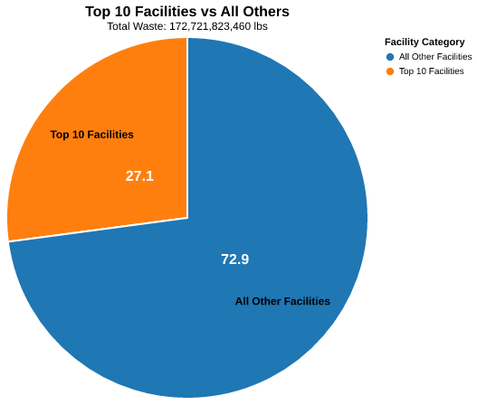
Top 10 Facilities - Waste: 46.82 Billion lbs - Share: 27.11%
Remaining 36,003 Facilities - Waste: 125.90 Billion lbs - Share: 72.89%
Total Waste - Combined: 172.72 Billion lbs - Coverage: 100%
Question: Which chemicals are the most commonly released (most reported)?
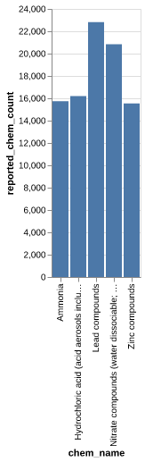
Top 5 Chemicals: 1. Lead 2. Nitrate 3. Hydrochloric Acid 4. Ammonia 5. Zinc
Question: Which locations have the most reported carcinogenic chemicals?
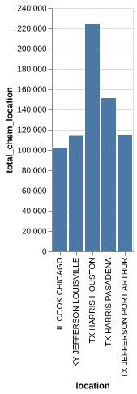
Top 5 Locations: 1. TX, Harris, Houston 2. TX, Harris, Pasadena 3. TX, Jefferson, Port Arthur 4. KY, Jefferson, Louisville 5. IL, Cook, Chicago
Question: Air release vs. water release vs. land release — which domain dominates?
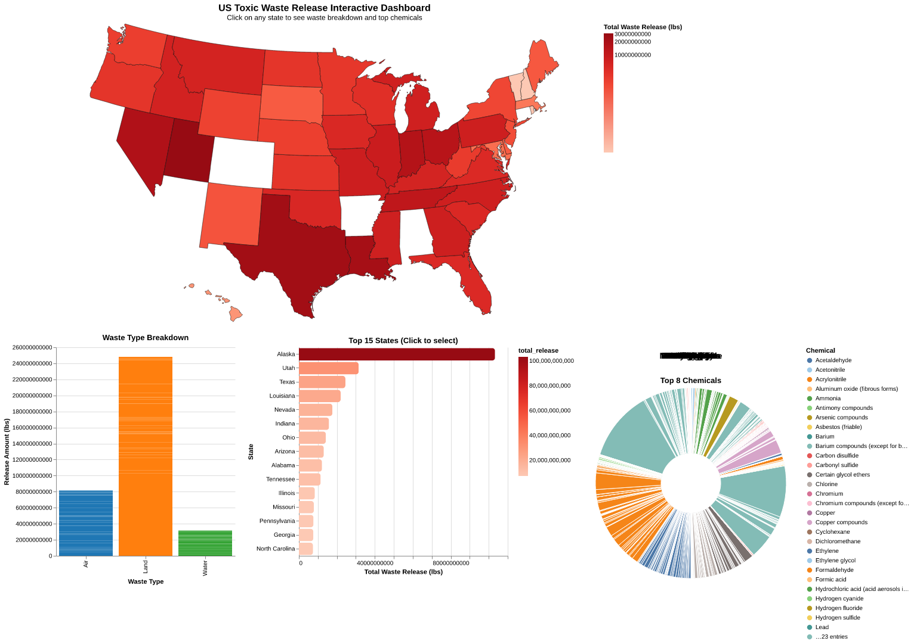
1. Land Release — Dominant by a wide margin
The most prevalent disposal method, accounting for the majority of all releases tracked in the TRI database.
2. Air Release — Moderate usage
Second most common disposal method, with significant industrial emissions recorded.
3. Water Release — Least used
The least utilized disposal method among the three domains.
The following technologies and methodologies were used to build the ETL pipeline and database:
INSERT ... ON CONFLICT UPDATE) to avoid duplicate entries and prevent errors during the data insertion process.API Extraction (Requests)
↓
Data Transformation (Pandas)
↓
Data Cleaning (Pandas)
↓
Database Insertion (SQLAlchemy)
↓
Migrations (Alembic)
↓
Exploritory Data Analysis(EDA) (Pandas/JSON)
↓
Data Visualization (Altair)
↓
Data Analysis